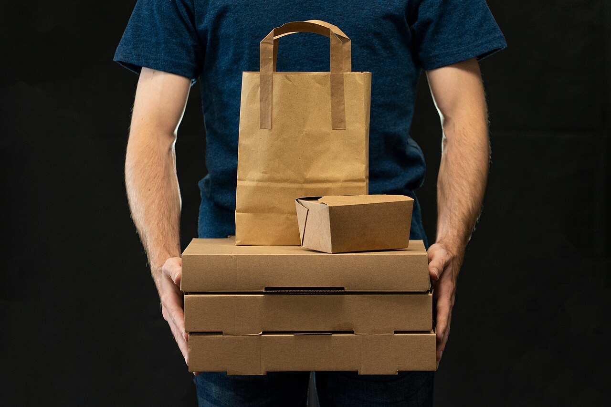

Voltar para os cases
Compre Sem Fila Delivery · Design System
Design System do app
[Uma frase com o resultado: o que mudou para o time e para o usuário, com um número.]
- Impacto
- [número]
- Período
- [ano]

Contexto e problema
Contexto
[Como o time trabalhava antes: quantos designers e squads, quais produtos, o que existia de componentes.]
O problema
[O que travava o time ou o usuário, em uma ou duas frases. Se tiver, um dado que mostre o tamanho do problema.]
O que eu fiz no projeto
Como Product Designer, [o que você liderou e com quem trabalhou].
- [Primeira decisão][O que você fez e por quê, em uma frase.]
- [Segunda decisão][O que você fez e por quê, em uma frase.]
- [Terceira decisão][O que você fez e por quê, em uma frase.]

Impacto do Design System
[Os resultados medidos depois do lançamento, com a fonte: analytics, pesquisa, tempo de entrega do time.]
- [O que mediu]
- [número]
- [O que mediu]
- [número]
- [O que mediu]
- [número]
O que aprendi
[Uma ou duas frases sobre o que você faria diferente ou o que esse projeto mudou no seu jeito de trabalhar.]